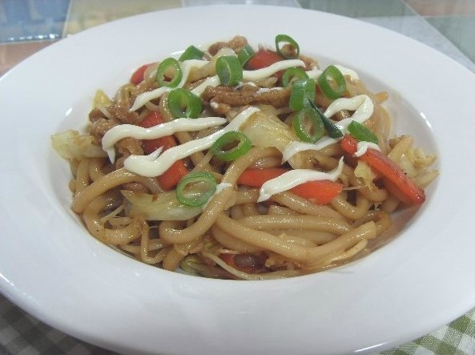

야키소바
재료
: 우동면 2개, 양배추, 당근, 콩나물, 유부, 식용유, 두부,
마요네즈
양념
- 양조간장, 맛술, 생수, 설탕, 다진 마늘, 참기름, 후춧가루
물을 끓여 우동면을 삶아 줍니다.
팬에 기름을 두르고 양배추와 당근을 볶아 줍니다.
약간의 식용유와 우동면, 유부를 넣어 주세요.
양념과 콩나물을 넣고 볶아 냅니다.
그릇에 담은 후 파와 마요네즈를 올려 줍니다.